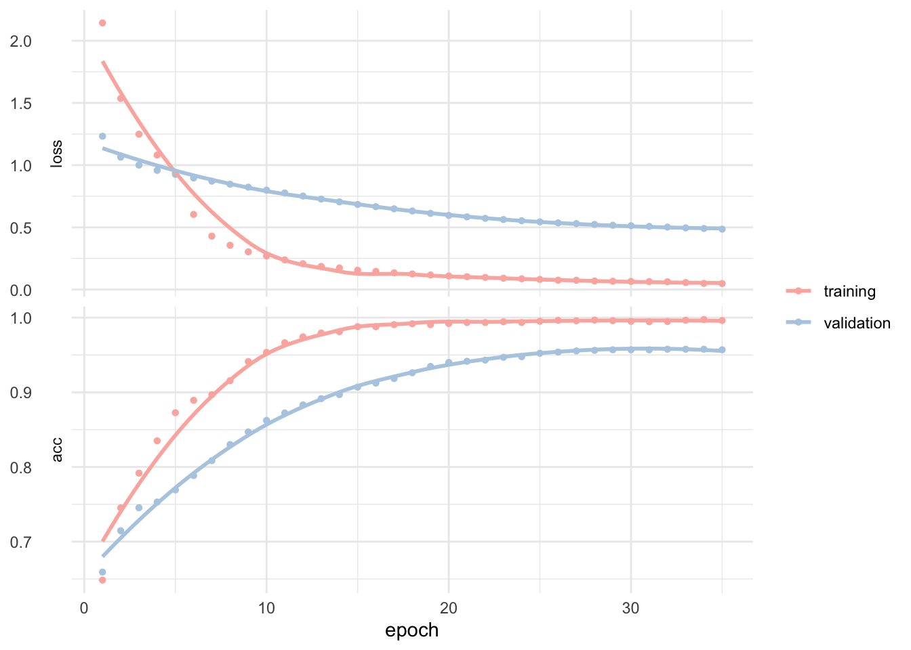

Mycology is the branch of biology concerned with the study of fungi, including their genetic and biochemical properties, their taxonomy and their use to humans as a source for tinder, medicine, food, and entheogens, as well as their dangers, such as toxicity or infection. It’s complicated and fascinating at the same time.
I wasn’t particularly fond of it at the university.
On the other hand I really enjoy eating mushroom. I normally buy them at the local market, so safety is no real concern of mine. Nevertheless, can we predict whether or not to eat a mushroom? How much would you trust a black-box model? Could we identify which characteristics help to differentiate eatable or poisonous mushrooms?
Where to find the mushrooms?
In woods, country paths, meadows, etc. Most likely. But I’m not going to reveal you some good spots, no no. This post isn’t about mushroom hunting (otherwise known as “shrooming”). We would simply like to learn which features spell certain death and which are most palatable in this dataset of mushroom characteristics.
It was originally donated to the UCI Machine Learning repository and includes descriptions of hypothetical samples corresponding to 23 species of gilled mushrooms in the Agaricus and Lepiota family mushroom drawn from the Audubon Society Field Guide to North American Mushrooms (1981). Each species is identified as definitely eatable or definitely poisonous.
# Some settings
temp <- tempfile()
url <- "https://archive.ics.uci.edu/ml/machine-learning-databases/mushroom/agaricus-lepiota.data"
# Then download it
curl_download(url, temp)
# read it
mush_data_raw <- read.csv(temp, header = FALSE)
# Name columns
colnames(mush_data_raw) <- c("class", "cap-shape", "cap-surface", "cap-color",
"bruises", "odor", "gill-attachment", "gill-spacing",
"gill-size", "gill-color", "stalk-shape", "stalk-root",
"stalk-surface-above-ring", "stalk-surface-below-ring",
"stalk-color-above-ring", "stalk-color-below-ring",
"veil-type", "veil-color", "ring-number", "ring-type",
"spore-print-color", "population", "habitat")
# And correct colnames
colnames(mush_data_raw) <- gsub("-", "_", colnames(mush_data_raw))Let’s have a look inside.
glimpse(mush_data_raw)
## Observations: 8,124
## Variables: 23
## $ class <fct> p, e, e, p, e, e, e, e, p, e, e, e, e...
## $ cap_shape <fct> x, x, b, x, x, x, b, b, x, b, x, x, b...
## $ cap_surface <fct> s, s, s, y, s, y, s, y, y, s, y, y, s...
## $ cap_color <fct> n, y, w, w, g, y, w, w, w, y, y, y, y...
## $ bruises <fct> t, t, t, t, f, t, t, t, t, t, t, t, t...
## $ odor <fct> p, a, l, p, n, a, a, l, p, a, l, a, a...
## $ gill_attachment <fct> f, f, f, f, f, f, f, f, f, f, f, f, f...
## $ gill_spacing <fct> c, c, c, c, w, c, c, c, c, c, c, c, c...
## $ gill_size <fct> n, b, b, n, b, b, b, b, n, b, b, b, b...
## $ gill_color <fct> k, k, n, n, k, n, g, n, p, g, g, n, w...
## $ stalk_shape <fct> e, e, e, e, t, e, e, e, e, e, e, e, e...
## $ stalk_root <fct> e, c, c, e, e, c, c, c, e, c, c, c, c...
## $ stalk_surface_above_ring <fct> s, s, s, s, s, s, s, s, s, s, s, s, s...
## $ stalk_surface_below_ring <fct> s, s, s, s, s, s, s, s, s, s, s, s, s...
## $ stalk_color_above_ring <fct> w, w, w, w, w, w, w, w, w, w, w, w, w...
## $ stalk_color_below_ring <fct> w, w, w, w, w, w, w, w, w, w, w, w, w...
## $ veil_type <fct> p, p, p, p, p, p, p, p, p, p, p, p, p...
## $ veil_color <fct> w, w, w, w, w, w, w, w, w, w, w, w, w...
## $ ring_number <fct> o, o, o, o, o, o, o, o, o, o, o, o, o...
## $ ring_type <fct> p, p, p, p, e, p, p, p, p, p, p, p, p...
## $ spore_print_color <fct> k, n, n, k, n, k, k, n, k, k, n, k, n...
## $ population <fct> s, n, n, s, a, n, n, s, v, s, n, s, s...
## $ habitat <fct> u, g, m, u, g, g, m, m, g, m, g, m, g...The first row contains what we are trying to predict: the class e and p referring to eatable and poisonous. I figured out that veil_type contains only p for partial in this list. This isn’t going to help to predict in any way and we can get rid of it.
# Prune the data
mush_data_tbl <- mush_data_raw %>%
select(-veil_type) %>%
select(class, everything())The guide clearly states that there is no simple rule for determining the edibility of a mushroom; no rule like “leaflets three, let it be” for poisonous Oak and Ivy. However, this was written years before the democratization of deep learning.
Before actually trying it out, there is a need to partition the data into training and testing datasets. Using all the data to build the model could lead to overfitting where it might be able to predict well on current data that it sees as it is built on, but may not predict well on new data.
set.seed(123)
# Split test/training sets
train_test_split <- initial_split(mush_data_tbl, prop = 0.8)
# Quick sanity check
train_test_split
## <6500/1624/8124>Training and testing sets can be retrieved using training() and testing() functions.
# Retrieve train and test sets
train_tbl <- training(train_test_split)
test_tbl <- testing(train_test_split)Create a recipe
Yes, not that we want to cook the mushroom right away - we don’t know if we can eat them yet. But recipes is a new package for preprocessing machine learning data sets. Basically, nothing more than a series of transformations - the steps of your recipe - we would like to perform on the different sets.
# Create recipe
rec_obj <- recipe(class ~ ., data = train_tbl) %>%
step_dummy(all_nominal(), -all_outcomes()) %>%
step_center(all_predictors(), -all_outcomes()) %>%
step_scale(all_predictors(), -all_outcomes()) %>%
prep(data = train_tbl)The goal is to predict the class, using all other variables. The good news is that we only have nominal predictors. The bad, we need to take care of them before injecting them in a neural network. recipe makes it easy to one-hot encode them all with a step_dummy. We can then center the values and finally scale them; step_center and step_scale, respectively.
To sum up, our recipe will perform following.
rec_obj
## Data Recipe
##
## Inputs:
##
## role #variables
## outcome 1
## predictor 21
##
## Training data contained 6500 data points and no missing data.
##
## Operations:
##
## Dummy variables from cap_shape, cap_surface, cap_color, bruises, ... [trained]
## Centering for cap_shape_c, cap_shape_f, ... [trained]
## Scaling for cap_shape_c, cap_shape_f, ... [trained]And now we need to bake our datasets. I removed the prediction class manually after realizing this wasn’t performed automatically by the recipe. It’s my understanding that this should have been done and I’d assume this will get fixed in a future update of the package.
x_train_tbl <- bake(rec_obj, newdata = train_tbl) %>%
select(-class)
x_test_tbl <- bake(rec_obj, newdata = test_tbl) %>%
select(-class)Definitively makes life so much easier, right?
Last but not the least, we will need to store the class, which is needed for modeling the neural network as this is supervised learning.
y_train <- ifelse(pull(train_tbl, class) == "e", 1, 0)
y_test <- ifelse(pull(test_tbl, class) == "e", 1, 0)Building an artificial neural network
Could the computer go beyond “whatever we know how to order it to perform” and learn on its own how to perform a specified task? To make a long story short: yes. For those unfamiliar with machine and deep learning, read this chapter from the excellent Deep Learning with R from François Chollet and J. J. Allaire. The clearest explanation I know and the best introduction to the world of deep learning using the powerful Keras library.
Let’s initialize a sequential model.
model_keras <- keras_model_sequential()Then apply some layers to it. Three.
model_keras %>%
# First hidden layer
layer_dense(units = 8, kernel_initializer = "uniform", activation = "relu", input_shape = ncol(x_train_tbl)) %>%
# Dropout to prevent overfitting
layer_dropout(rate = 0.1) %>%
# Second hidden layer
layer_dense(units = 4, kernel_initializer = "uniform", activation = "relu") %>%
# Dropout to prevent overfitting
layer_dropout(rate = 0.1) %>%
# Output layer
layer_dense(units = 1, kernel_initializer = "uniform", activation = "sigmoid") %>%
# Compile
compile(optimizer = 'adam', loss = 'binary_crossentropy', metrics = c('accuracy'))Dropout layers are used to control overfitting. This was inspired by a fraud-prevention mechanism used in banks and aims at preventing conspiracies among employees. It introduces some random and artificial noise to break-up happenstance patterns that aren’t significant.
Good, our model is now defined as.
model_keras
## Model
## ___________________________________________________________________________
## Layer (type) Output Shape Param #
## ===========================================================================
## dense_1 (Dense) (None, 8) 768
## ___________________________________________________________________________
## dropout_1 (Dropout) (None, 8) 0
## ___________________________________________________________________________
## dense_2 (Dense) (None, 4) 36
## ___________________________________________________________________________
## dropout_2 (Dropout) (None, 4) 0
## ___________________________________________________________________________
## dense_3 (Dense) (None, 1) 5
## ===========================================================================
## Total params: 809
## Trainable params: 809
## Non-trainable params: 0
## ___________________________________________________________________________And can be fitted on the training data.
fit_keras <- fit(object = model_keras, x = as.matrix(x_train_tbl), y = y_train,
batch_size = 50, epochs = 35, validation_split = 0.20)Training and validation history looks like this.
plot(fit_keras) +
theme_minimal() +
scale_fill_brewer(palette = "Pastel1") +
scale_color_brewer(palette = "Pastel1") +
theme(legend.title = element_blank()) +
theme(axis.title.y = element_blank())
yardstick comes in very handy to quickly calculate metrics.
# Predicted class
keras_class <- predict_classes(object = model_keras, x = as.matrix(x_test_tbl)) %>%
as.vector()
# Predicted class prob
keras_prob <- predict_proba(object = model_keras, x = as.matrix(x_test_tbl)) %>%
as.vector()
# Format test data and predictions for yardstick metrics
estimates_keras_tbl <- tibble(truth = as.factor(y_test) %>% fct_recode(Eatable = "1", Poisonous = "0"),
estimate = as.factor(keras_class) %>% fct_recode(Eatable = "1", Poisonous = "0"), class_prob = keras_prob)
options(yardstick.event_first = FALSE)Coming back to our mushroom’s classification problem.
# Confusion table
estimates_keras_tbl %>%
conf_mat(truth, estimate)
## Truth
## Prediction Poisonous Eatable
## Poisonous 759 41
## Eatable 0 824
# Accuracy
estimates_keras_tbl %>%
metrics(truth, estimate)
## # A tibble: 2 x 3
## .metric .estimator .estimate
## <chr> <chr> <dbl>
## 1 accuracy binary 0.975
## 2 kap binary 0.949
# AUC
estimates_keras_tbl %>%
roc_auc(truth, class_prob)
## # A tibble: 1 x 3
## .metric .estimator .estimate
## <chr> <chr> <dbl>
## 1 roc_auc binary 0.999We get a totally mind blowing ~99% accuracy. And this is only a quick and dirty first test! We can clearly see on the training and validation history that some tuning and possibly testing different classification algorithms may yield even better results.
In real life, however, the few false positive predictions we made here may have you landing directly in the emergency medical unit from the next hospital. Still this is probably already a near-human-level classification because yes, human make mistakes too.
Using LIME for feature importance plot
LIME stands for Local Interpretable Model-agnostic Explanations, and is a method for explaining black-box machine learning model classifiers. Sometimes you don’t know if you can trust a machine learning prediction as you also need to know if you can trust the model itself.
Let’s use two functions to set up LIME from the excellent and very inspirational post from Matt Dancho. In fact most of the code here was adapted from it to fit on the mushroom’s classification problem. They have fantastic explanation too, if I’ve lost you here.
# Setup lime::model_type() function for keras
model_type.keras.models.Sequential <- function(x, ...) {
return("classification")
}
# Setup lime::predict_model() function for keras
predict_model.keras.models.Sequential <- function(x, newdata, type, ...) {
pred <- predict_proba(object = x, x = as.matrix(newdata))
return(data.frame(Yes = pred, No = 1 - pred))
}Let’s run the explainer and create explanation for the first six mushrooms.
# Run lime() on training set
explainer <- lime::lime(x = x_train_tbl, model = model_keras, bin_continuous = FALSE)
# Run explain() on explainer
explanation <- lime::explain(x_test_tbl[1:6, ], explainer = explainer, n_labels = 1,
n_features = 5, kernel_width = 0.5)Which we can plot to have a look at what the model used to label them all six.
plot_features(explanation) +
scale_fill_manual(values = c(brewer.pal(3, "Pastel1")[3], brewer.pal(3, "Pastel1")[1])) +
theme(axis.title.x = element_blank()) +
theme(axis.title.y = element_blank()) +
theme(axis.text.y = element_text(size = 4)) +
theme(legend.position = "none") +
labs(title = "LIME Feature Importance Visualization",
subtitle = "hold out (test) set, first 6 cases shown")We visualize here the top five features. Surprisingly, it looks like four are sufficient enough for the model to decide. The green bars mean that the feature supports the model conclusion, and the red bars contradict. To predict if a mushroom is eatable or not our model mainly uses:
- odor definitively the most relevant piece of information
- gill spacing also very important was used in five cases
- spore print color seems important in 50% of the cases
For a global perspective about what drives feature importance we can perform a correlation analysis on the training set as well. This will help analyze what features correlate globally with the possibility to eat a mushroom. Correlations are calculated as follows.
corrr_analysis <- x_train_tbl %>%
mutate(eatable = y_train) %>%
correlate() %>%
focus(eatable) %>%
rename(feature = rowname) %>%
arrange(abs(eatable)) %>%
mutate(feature = as_factor(feature))Which allows us to plot.
corrr_analysis %>%
ggplot(aes(x = eatable, y = fct_reorder(feature, desc(eatable)))) +
geom_point() +
# positive correlations - likelihood eatable
geom_segment(aes(xend = 0, yend = feature),
color = brewer.pal(3, "Pastel1")[3],
data = corrr_analysis %>% filter(eatable > 0),
size = .25) +
geom_point(color = brewer.pal(3, "Pastel1")[3],
data = corrr_analysis %>% filter(eatable > 0)) +
# negative correlations - likelihood poisonous
geom_segment(aes(xend = 0, yend = feature),
color = brewer.pal(3, "Pastel1")[1],
data = corrr_analysis %>% filter(eatable < 0),
size = .25) +
geom_point(color = brewer.pal(3, "Pastel1")[1],
data = corrr_analysis %>% filter(eatable < 0)) +
# aesthetics
scale_x_continuous(breaks = seq(-1, 1, .25)) +
theme_minimal() +
theme(axis.title.x = element_blank()) +
theme(axis.title.y = element_blank()) +
theme(panel.grid.minor.y = element_blank(),
panel.grid.major.y = element_blank()) +
theme(axis.text.y = element_text(size = 4)) +
labs(title = "Mushroom Correlation Analysis",
subtitle = "likelihood poisonous versus likelihood eatable")Without big surprise we find that odor, gill, and spore are determinant to classify the mushrooms. Clearly the ring, bruises, and stalk are extremely important too. The guide is right in stating that there is no simple rule for determining the edibility, although a couple of rules could maybe give an accurate prediction.
Let’s see how this could look.
mush_data_raw %>%
ggplot(aes(x = as.factor(stalk_surface_above_ring), y = as.factor(gill_size), color = class)) +
geom_jitter() +
scale_color_manual(breaks = c("No","Yes"),
values = c(brewer.pal(3, "Pastel1")[3], brewer.pal(3, "Pastel1")[1])) +
scale_x_discrete(breaks = c("f", "k", "s", "y"),
labels = c("fibrous", "silky", "smooth", "scaly")) +
scale_y_discrete(breaks = c("b", "n"),
labels = c("broad", "narrow")) +
theme_minimal() +
theme(legend.title = element_blank()) +
theme(axis.text.x = element_text(angle = 45, vjust = .5)) +
theme(axis.text.y = element_text(angle = 45, vjust = -.5)) +
labs(x = "Stalk surface above ring", y = "Gill size",
title = "Edibility of mushrooms: rule one.",
subtitle = "using stalk surface above ring and gill syze")Not bad but still very risky.
mush_data_raw %>%
ggplot(aes(x = as.factor(odor), y = as.factor(ring_type), color = class)) +
geom_jitter() +
scale_color_manual(breaks = c("No","Yes"),
values = c(brewer.pal(3, "Pastel1")[3], brewer.pal(3, "Pastel1")[1])) +
scale_x_discrete(breaks = c("a", "c", "f", "l", "m", "n", "p", "s", "y"),
labels = c("almond", "creosote", "foul",
"anise", "musty", "none",
"pungent", "spicy", "fishy")) +
scale_y_discrete(breaks = c("e", "f", "l", "n", "p"),
labels = c("evanescent", "flaring", "large",
"none", "pendant")) +
theme_minimal() +
theme(legend.title = element_blank()) +
theme(axis.text.x = element_text(angle = 45, vjust = .5)) +
theme(axis.text.y = element_text(angle = 45, vjust = -.5)) +
labs(x = "Odor", y = "Ring type",
title = "Edibility of mushrooms: rule two.",
subtitle = "using odor and ring type")This is already much better and really helps to avoid most of the poisonous mushrooms. If it smells like almond or anise (and provided your mushroom was in this dataset) you can go ahead. However, if it has no particular smell, and if the ring isn’t flaring you need to be more careful before eating your prey.
Conclusion
Well, this is a good example of how deep learning can help with classification problem. Building the neural network model using the Keras package with a little help from recipe is very easy and results are jaw-dropping: very few lines of code and without any tuning of the model we can get an accuracy superior to 99%. The real good news is that from now on, using lime we can explain the model. This was traditionally a difficult task although it’s really utterly important to know what variable it uses if anybody is to trust it.
As for the mushrooms, we were able to define critical items you should be paying attention to before bringing them back home and throw them in the pane. Odor is the most critical one. But as the guide stated, there is no golden rule you can use to decide, more like two or three questions (the model used four features) you should ask yourself to evaluate the risk. The model has a really low false positive rate, but after all any mistakes here could be deadly and you should be really careful.